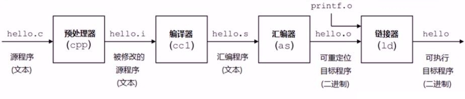
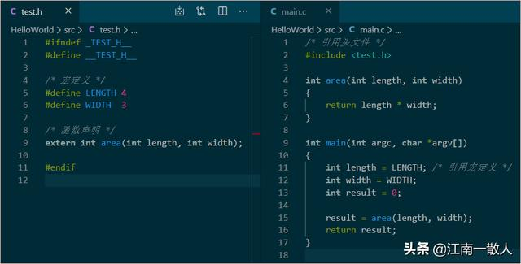
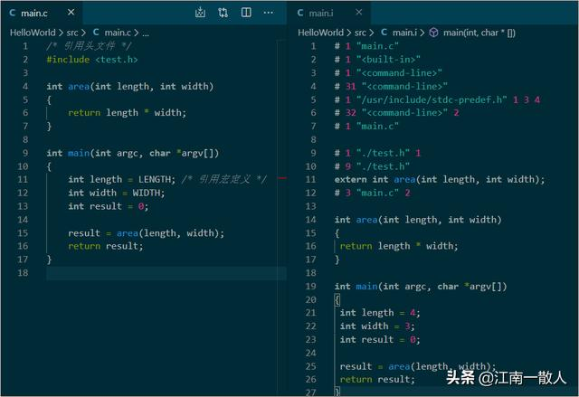
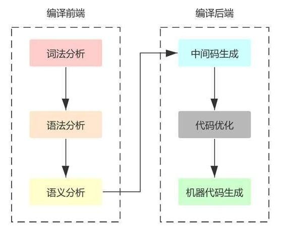
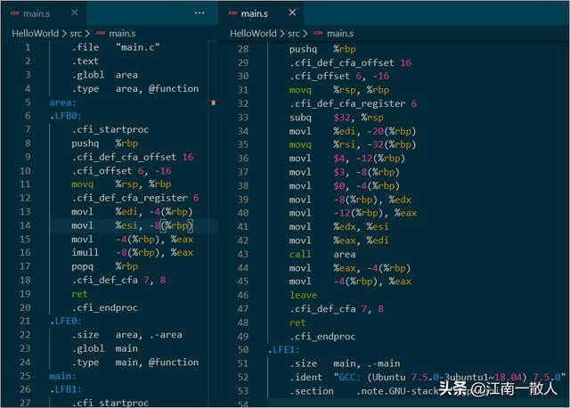
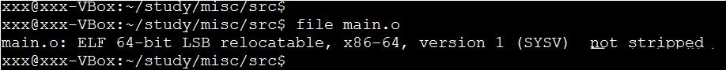
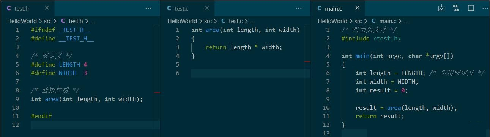
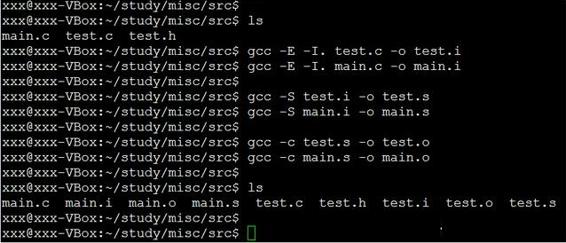

你真的懂"Hello world"吗？从编译器到OS内核系列:编译器基本概念
江南一散人 2020-04-25 22:39:54
本文是《你真的理解"Hello world"吗？从编译链接到OS内核系列专题》的第一章的第一小节，主要介绍编译器的基本概念以及C语言程序的构建过程。全系列大纲如下：
本系列专题将带你了解"Hello World"背后隐藏的那些极为重要却又鲜为人知的底层技术，让你对计算机系统的基本原理有一个全面深刻的理解。
注：本篇的重点是介绍基本概念，让童鞋们对C语言程序构建过程有一个整体的了解，后续会有专门的章节详细介绍编译、链接的实现原理等技术细节，敬请期待！
引子
人与人之间可以通过文字语言或者肢体语言进行交流，海豚之间通过发出不同频率的“脉冲声”进行交流，计算机之间则通过由0和1组成的电信号进行交流。
那么，人与计算机之间如何进行交流呢？这就不得不用到编译器了。
编译器是什么
简单来讲，编译器就是把一种语言（通常是某种高度抽象的高级语言）转化为另一种语言（通常是某种低级语言）的计算机程序。
编译器要解决的根本问题
人类无法直观地理解电信号所携带的信息，同样，计算机也无法理解人类使用的自然语言所表达的含义。
因此，要想让计算机能够“听懂”人话，帮人办事儿，就必须要能够把人类的语言，翻译成计算机能够识别的二进制机器指令。而这，就是编译器所要解决的最根本的问题。
C语言程序的构建过程
"Hello world"我们再熟悉不过了，它是怎么从我们编辑器里的文本文件转化成可执行的二进制文件呢？

C语言的构建过程，有下面几个典型的过程：
预编译
所谓预编译，是指在正式编译阶段之前，对源码文件先进行一系列的预处理，以便于后续编译阶段的处理。预编译阶段的主要工作有：
如下图中，左侧是test.h文件，右侧是main.c文件

test.h 和 main.c
请注意，我们在头文件test.h中定义了两个宏，并且声明了area()函数，然后在main.c中包含test.h，并且在main()函数中引用两个宏定义。
我们用下面的命令对它进行预处理：
gcc -E -I. main.c -o main.i
得到的输出文件是main.i，如下图右侧所示：

main.c 和 main.i
从main.i中，我们看到test.h被完全的展开了，并且对宏定义LENGTH和WIDTH的引用也被展开，所有的注释被删除，此外还添加了文件位置信息和行号信息。
预编译器所做的工作比较简单，原理和实现也相对容易，主要就是普通的文本处理。
编译
编译阶段的主要是把经过预处理的C语言源代码经过一词法分析、语法分析、语义分析和代码优化之后，产生汇编代码，也就是在编译阶段的目标代码。
典型的编译过程，如下图所示：

典型的编译过程
我们对main.i文件进行编译：
gcc -S main.i -o main.s
得到的汇编文件main.s的如下图所示：

main.s
这是程序构建过程中的最核心也是最复杂的环节之一，我将会在下篇文章中对其实现原理进行详细讲解。
汇编
编译阶段产生的目标代码是汇编代码，相对原始的C语言文件来说，它的语法更加简洁，数据类型更加简单，程序结构更易处理。
尽管汇编代码跟最终的二进制机器指令已经非常接近，但它仍然属于文本语言，无法直接被计算机识别。
因此，汇编阶段所做的主要工作，就是根据CPU厂商提供的汇编指令和机器指令的对照表，把汇编指令翻译成机器指令，这个阶段的最终输出结果被称为目标文件。
对main.s进行汇编，将生成目标文件main.o：
gcc -c main.s -o main
我用file命令看一下main.o的信息：

可以看出，此时main.o的类型是可重定向（relocatable）的目标文件，还不是最终的可执行文件。
我会在稍后更新的本系列专题的第二章《链接器的基本原理》中详细讲解两者的区别。
汇编器原理比较简单，但是由于CPU所支持的指令多而杂，实现起来会比较繁琐。
扩展知识 - 把文本形式的汇编代码翻译成二进制机器指令的程序叫做汇编器，而与之相反的，把二进制机器指令翻译成文本形式的汇编代码的程序，叫做反汇编器。
在程序调试过程中，反汇编器经常会用到，尤其在调试一些系统底层软件的时候，反汇编器是必不可少的工具，常用的调试工具一般都会集成反汇编器，比如gdb，Virtual Studio等。此外，在软件逆向工程中，反汇编器也是最核心的工具之一。
链接
链接是C语言程序构建过程的最后一个环节。简单来说，链接阶段的主要工作，就是把多个目标文件之间建立起来一种联系，然后根据这种联系，把这些相互关联的目标文件组合起来，最终生成一个可执行文件。
这里的目标文件，包括汇编阶段产生的目标文件，以及这些目标文件中引用的外部函数所在的库文件，包括动态链接库和静态链接库。
我们仍以计算长方形面积的程序为例，但是稍稍做些修改，我们把area()函数单独放在一个test.c中，源码如下图所示：

然后重新执行上面的预编译、编译和汇编的步骤：

此时我们得到两个目标文件：test.o和main.o，然后
gcc test.o main.o -o main
这样，我们就把test.o和main.o链接成了一个可执行文件main.
注：为了便于概念的理解，我在这里故意忽略了对外部库的链接处理，我将在本系列专题的第二章《链接器的工作原理》中，重点讲解动态链接和静态链接过程。
小结
编译器要解决的根本任务是要将人类可识别的文本语言转换为计算机可识别的二进制指令。
对于C语言来说，编译器在程序构建过程中，经过预编译、编译、汇编和链接，把C语言编写的源文件最终生成可执行的二进制文件。
后续更新内容预告
本篇作为本系列专题第一章的第一节，主要侧重读概念的介绍和C语言程序构建的基本过程。后续章节将会更注重技术实现的细节。
下篇是本系列专题第一章的第二小节，将重点讲解编译器的实现原理，通过实例讲解词法分析、语法分析、语义分析、中间表示生成、代码优化以及代码生成的技术细节。
然后就是本系列专题的第二章《链接器的工作原理》，实例讲解链接过程中的各种技术细节。
思考题
经过本节的介绍，我们知道了C语言程序构建过程要经过预编译、编译、汇编、链接等过程，不妨思考一下：